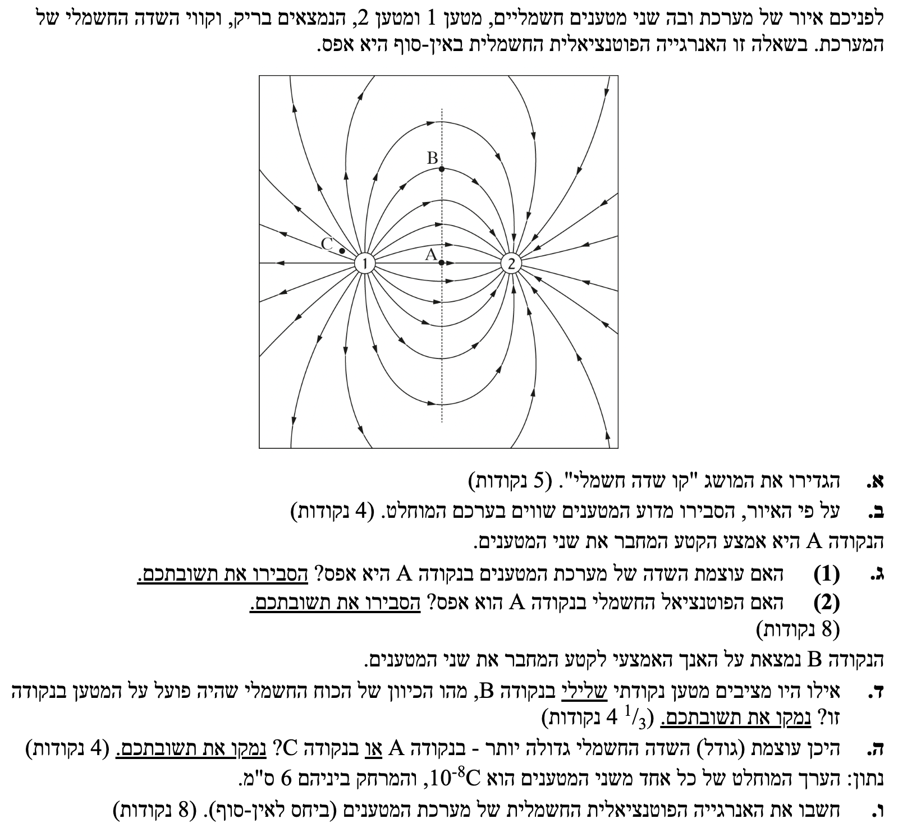

פתרון בגרות פיזיקה - חשמל 2019 שאלה 1
פיזיקה - חשמל - שנת 2019
פתרון מודרך, צעד-אחר-צעד הכולל המחשות ויזואליות
עודכן:
--- --:--:--

[תמונת השאלה המקורית]
לא נמצאה תמונה בשם question-image.png באותה תיקייה.
מה נתון: מוצג המושג הפיזיקלי "שדה חשמלי". אין נתונים מספריים.
מה מחפשים: הגדרה מדויקת ורשמית של המושג "שדה חשמלי".
נוסחאות ועקרונות בשימוש:
הקשר בין כוח לשדה חשמלי (מדף הנוסחאות):
\( \vec{E} = \frac{\vec{F}}{q} \)
הצבה ופתרון:
על פי הנוסחה, שדה חשמלי הוא גודל וקטורי המאופיין על ידי גודל וכיוון בנקודה במרחב.
השדה החשמלי בנקודה במרחב מוגדר ככוח החשמלי הפועל על יחידת מטען חיובית (מטען בוחן) המונחת באותה נקודה. מכיוון שמדובר בגודל וקטורי, השדה מאופיין על ידי גודל וכיוון: גודל השדה מחושב כיחס שבין עוצמת הכוח החשמלי לבין גודל המטען שעליו הוא פועל (\( E = F/q \)), ו-כיוון השדה מוגדר ככיוון הכוח החשמלי שיפעל על מטען בוחן חיובי אם יוצב באותה הנקודה.
💡 טיפ מורה:
השדה החשמלי הוא המרחב עצמו שנושא את ההשפעה החשמלית! הוא קיים סביב כל מטען במרחב, גם אם אין שם "מטען בוחן" כדי להרגיש אותו. המטען רק מאפשר לנו "למדוד" את השדה, בדיוק כמו שמד-חום מודד את הטמפרטורה בחדר, אבל הטמפרטורה קיימת שם גם בלעדיו.
מה נתון: איור של קווי שדה חשמלי הנוצרים על ידי שני מטענים נקודתיים. הקווים יוצאים ממטען 2 ונכנסים למטען 1.
מה מחפשים: הסבר מנומק, מתוך התבוננות באיור, מדוע המטענים שווים בערכם המוחלט.
נוסחאות ועקרונות בשימוש:
תכונות קווי שדה: מספר קווי השדה היוצאים ממטען (או נכנסים אליו) עומד ביחס ישר לגודל המטען (בערך מוחלט).
הצבה ופתרון:
כאשר אנו מתבוננים באיור, ניתן לראות תבנית סימטרית לחלוטין. כל קו שדה שיוצא ממטען 2, מגיע אל מטען 1. אין קווים ש"בורחים" לאינסוף או מגיעים מהאינסוף ולא מתחברים לאחד המטענים.
מכיוון שמספר קווי השדה המחוברים לכל מטען מייצג את גודלו, והיות שמספר הקווים היוצאים ממטען 2 שווה בדיוק למספר הקווים הנכנסים למטען 1, הרי שהמטענים שווים בגודלם.
היות שמספר קווי השדה זהה עבור שני המטענים (כל קו שיוצא ממטען 2 נכנס למטען 1, סימטריה מלאה), נובע מכך ש: \( |q_1| = |q_2| \)
💡 טיפ מורה:
כיוון החצים מלמד אותנו עוד משהו חשוב מאוד להמשך השאלה! קווי השדה יוצאים ממטען חיובי ונכנסים למטען שלילי. לכן, אנו מסיקים בוודאות ש-מטען 2 הוא חיובי ו-מטען 1 הוא שלילי.
מה נתון: נקודה A היא אמצע הקטע המחבר את שני המטענים. המטענים מנוגדים בסימנם: \( q_2 > 0 \), \( q_1 < 0 \). המרחק מהנקודה A לכל מטען הוא זהה (נסמנו ב-\( r \)).
מה מחפשים: האם עוצמת השדה החשמלי בנקודה A היא אפס? הסבר.
נוסחאות ועקרונות בשימוש:
גודל שדה חשמלי סביב מטען נקודתי:
\( E = k\frac{|q|}{r^2} \)
עקרון הסופרפוזיציה לשדות: השדה השקול בנקודה הוא הסכום הווקטורי של השדות שכל מטען יוצר בנפרד.
הצבה ופתרון:
נבדוק את כיוון השדות בנקודה A:
- מטען 2 הוא חיובי. השדה שהוא יוצר מכוון החוצה ממנו. לכן בנקודה A השדה \( \vec{E_2} \) מכוון שמאלה.
- מטען 1 הוא שלילי. השדה שהוא יוצר מכוון אליו. לכן בנקודה A השדה \( \vec{E_1} \) מכוון גם כן שמאלה.
מכיוון ששני הווקטורים מצביעים לאותו כיוון (שמאלה), הם אינם מבטלים זה את זה, אלא מתחברים. גודלם שווה (\( E_1 = E_2 = k\frac{|q|}{r^2} \)) אך הסכום הווקטורי אינו אפס.
עוצמת השדה בנקודה A אינה אפס. שני המטענים מייצרים במרכז שדה באותו כיוון (ממטען 2 למטען 1), ולכן השדות מתחברים זה לזה ולא מתבטלים.
💡 טיפ מורה:
תלמידים נוטים להתבלבל ולחשוב ש"אמצע" אומר "מתאפס". שדה הוא וקטור! השדה מתאפס באמצע רק אם שני המטענים הם בעלי אותו סימן (כך שוקטור אחד מצביע ימינה והשני שמאלה והם מבטלים זה את זה).
מה נתון: אותם נתונים מסעיף ג'(1): הנקודה A באמצע, מטענים זהים בגודלם ומנוגדים בסימנם: \( q_1 = -q_2 \).
מה מחפשים: האם הפוטנציאל החשמלי בנקודה A הוא אפס? הסבר.
נוסחאות ועקרונות בשימוש:
פוטנציאל חשמלי סביב מטען נקודתי:
\( V = k\frac{q}{r} \)
סופרפוזיציה של פוטנציאלים: הפוטנציאל הוא גודל סקלרי. מחברים את הפוטנציאלים חיבור אלגברי פשוט כולל סימני המטענים.
הצבה ופתרון:
הפוטנציאל הכולל בנקודה A הוא סכום הפוטנציאלים של שני המטענים. נציב בנוסחה, נזכור שהמרחק \( r \) הוא זהה לשני המטענים ושסימניהם מנוגדים (נסמן את הגודל המוחלט כ-\( q \), לכן \( q_2 = q \) ו- \( q_1 = -q \)):
\[ V_A = V_1 + V_2 = k\frac{q_1}{r} + k\frac{q_2}{r} \]
\[ V_A = k\frac{-q}{r} + k\frac{q}{r} = 0 \]
הפוטנציאל בנקודה A הוא אפס. היות והנקודה נמצאת במרחק שווה ממטען חיובי וממטען שלילי השווים בערכם המוחלט, סכומם הסקלרי מתאפס.
💡 טיפ מורה:
זה המקום להבין את ההבדל התהומי בין וקטור (שדה) לסקלר (פוטנציאל). שדה לא מתאפס כי הכיוונים עוזרים זה לזה. פוטנציאל מתאפס כי פלוס ומינוס מאזנים זה את זה, בלי שום קשר ל"כיוונים" (לפוטנציאל אין כיוון במרחב!).
מה נתון: נקודה B ממוקמת על האנך האמצעי של הקטע המחבר את המטענים. בנקודה זו מוצב מטען נקודתי שלילי.
מה מחפשים: את כיוון הכוח החשמלי שיפעל על המטען שהוצב בנקודה B.
נוסחאות ועקרונות בשימוש:
כוח חשמלי הפועל על מטען בשדה חשמלי:
\( \vec{F} = q\vec{E} \)
תכונת קווי השדה: כיוון השדה החשמלי השקול בנקודה מסוימת הוא בכיוון המשיק לקו השדה באותה נקודה. מנוסחת הכוח נובע כי עבור מטען שלילי (\( q < 0 \)), כיוון הכוח מנוגד לכיוון השדה.
הצבה ופתרון:
שלב 1: כיוון השדה בנקודה B
במקום לבצע סכום וקטורי של שני השדות, נשתמש ישירות באיור הנתון. קו השדה העובר בנקודה B מראה לנו מראש את כיוון השדה השקול. המשיק לקו השדה בנקודה B (בשיא הגובה) מצביע ימינה, עם כיוון זרימת קווי השדה (מהמטען החיובי לשלילי). לכן השדה השקול מכוון ימינה.
שלב 2: כיוון הכוח על מטען שלילי
מכיוון שהמטען שהונח בנקודה B הוא שלילי, הכוח החשמלי הפועל עליו מנוגד לכיוון השדה החשמלי באותה נקודה.
כיוון השדה מורה ימינה, ולכן הכוח החשמלי שיפעל על המטען השלילי בנקודה B מכוון שמאלה.
💡 טיפ מורה:
שימו לב לקיצור הדרך! כאשר יש לנו שרטוט נתון של קווי שדה, אין צורך לבזבז זמן על חישובי סופרפוזיציה וקטורית מאפס. קווי השדה הם בעצם "מפת דרכים" שהוכנה עבורנו מראש, והמשיק להם מספק לנו באופן מיידי את כיוון השדה השקול בכל נקודה במרחב! כלל אצבע שכדאי לזכור: מטען חיובי "זורם" עם כיוון השדה, בעוד שמטען שלילי נדחף "נגד הזרם".
מה נתון: מיקומי הנקודות A ו-C על פי האיור. נקודה C ממוקמת קרוב מאוד למטען 1.
מה מחפשים: היכן עוצמת השדה החשמלי גדולה יותר, בנקודה A או בנקודה C? נמק.
נוסחאות ועקרונות בשימוש:
המשמעות הגרפית של קווי שדה: עוצמת השדה החשמלי פרופורציונלית לצפיפות קווי השדה במרחב. היכן שהקווים צפופים יותר (קרובים זה לזה), השדה חזק יותר.
הצבה ופתרון:
על ידי הסתכלות פשוטה באיור הנתון, ניתן להבחין כי באזור של נקודה C (הקרובה מאוד למטען) קווי השדה קרובים מאוד זה לזה (צפופים). לעומת זאת, באזור של נקודה A (אמצע המרחק בין המטענים), המרחק בין קווי השדה גדול משמעותית.
עוצמת השדה גדולה יותר בנקודה C, מכיוון שצפיפות קווי השדה באזור נקודה C גדולה יותר מאשר באזור נקודה A.
💡 טיפ מורה:
תמיד אפשר לגבות תשובה איכותית בהבנה מתמטית! שדה ממטען נקודתי דועך בריבוע המרחק \( (1/r^2) \). נקודה C קרובה מאוד למטען 1, ולכן המרחק \( r \) הוא זעיר, מה שהופך את השדה לעצום. בנקודה A המרחק מכל מטען הוא די גדול.
מה נתון:
ערך מוחלט של כל מטען:
\( |q| = 10^{-8} \text{ C} \). מכאן נקבל:
\( q_1 = -10^{-8} \text{ C} \) ו-
\( q_2 = 10^{-8} \text{ C} \).
המרחק בין המטענים נתון בס"מ ויש להמיר אותו למטרים (יחידות MKS):
\( r = 6 \text{ cm} = 0.06 \text{ m} \)
מה מחפשים: את האנרגיה הפוטנציאלית החשמלית של מערכת שני המטענים (ביחס לאינסוף).
נוסחאות ועקרונות בשימוש:
אנרגיה של זוג מטענים נקודתיים:
\( U = k\frac{q_1 q_2}{r} \)
קבוע קולון (מדף הנוסחאות):
\( k = 9 \cdot 10^9 \frac{\text{N}\cdot\text{m}^2}{\text{C}^2} \)
הצבה ופתרון:
נציב את הנתונים ישירות לנוסחת האנרגיה הפוטנציאלית, תוך הקפדה יתרה על סימני המטענים:
\[ U = 9\cdot 10^9 \cdot \frac{(-10^{-8}) \cdot (10^{-8})}{0.06} \]
\[ U = 9\cdot 10^9 \cdot \frac{-10^{-16}}{0.06} \]
\[ U = \frac{-9 \cdot 10^{-7}}{0.06} \]
\[ U = -150 \cdot 10^{-7} \text{ J} = -1.5 \cdot 10^{-5} \text{ J} \]
האנרגיה הפוטנציאלית החשמלית של מערכת המטענים היא: \( U = -1.5 \cdot 10^{-5} \text{ J} \)
💡 טיפ מורה:
שמתם לב שהאנרגיה יצאה שלילית? המשמעות הפיזיקלית של אנרגיה פוטנציאלית שלילית היא שזוהי מערכת "קשורה". מאחר שקיימים כוחות משיכה בין המטענים, כדי "לפרק" את המערכת ולהרחיק את המטענים זה מזה לאינסוף (שם האנרגיה הוגדרה כאפס), נצטרך להשקיע בהם עבודה חיצונית חיובית בגודל זה.